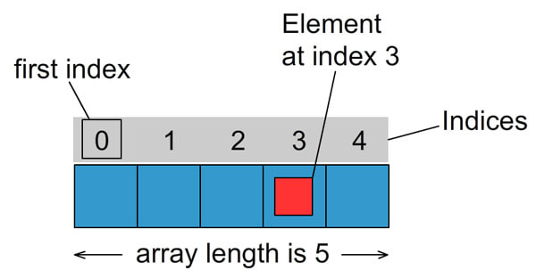

1. Масиви
Масив — структура даних для зберігання і маніпулювання колекцією індексованих значень. Використовуються для зберігання впорядкованих колекцій даних, наприклад списку курортів, товарів, клієнтів в готелі й т. п.
2. Створення
Синтаксис для створення нового масиву - квадратні дужки [] зі списком елементів розділених комами. У масиві може зберігатися будь-яке число елементів будь-якого типу.
// Пустий масив
const arr = [];
// Масив clients с трьома елементами
const clients = ['Mango', 'Poly', 'Ajax'];
console.log(clients); // ["Mango", "Poly", "Ajax"]
3. Доступ до елементів
В якості ключів-індексів використовуються цифри, індексація починається з нуля.

Щоб отримати потрібний елемент з масиву, після імені змінної яка містить масив, вказується індекс елемента у квадратних дужках. На місце такого виразу буде підставлене значення зберігається в елементі масиву.
const clients = ['Mango', 'Poly', 'Ajax'];
// Вказуючи в дужках індекс елемента ми отримуємо його значення
console.log(clients[0]); // Mango
console.log(clients[1]); // Poly
console.log(clients[2]); // Ajax
4. Перевизначення
Елементи масиву можна замінювати та додавати, звертаючись до елементу масиву за індексом.
const clients = ['Mango', 'Poly', 'Ajax'];
// Значення елемента можна замінити
clients[0] = 'Kiwi';
console.log(clients[0]); // Kiwi
// Або додати
clients[3] = 'Alex';
console.log(clients[3]); // Alex
console.log(clients); // ["Kiwi", "Poly", "Ajax", "Alex"]
5. Довжина масиву
Довжина масиву динамічна величина і змінюється автоматично при додаванні або видаленні елементів. Поточне число елементів масиву міститься в його властивості length.
Властивість length можна змінювати безпосередньо.
- Якщо встановити для властивості
lengthзначення, що перевищує кількість елементів в масиві, нові елементи будуть додані з початковими значеннямиundefined. - Якщо задати довжину масиву менше ніж поточна кількість елементів в масиві то всі елементи, що "не влізли" в нову довжину просто видаляються.
const clients = ['Mango', 'Poly', 'Ajax'];
// length поверне поточну довжину масиву
console.log(clients.length); // 3
clients.length = 5;
console.log(clients.length); // 5
console.log(clients); // ["Mango", "Poly", "Ajax", empty × 2]
console.log(clients[4]); // undefined
clients.length = 2;
console.log(clients); // ["Mango", "Poly"]
6. Ітерація по масиву
Для ітерації по масиву або перебору масиву, використовуються цикли, зокрема цикл for. Переберемо масив клієнтів і виведемо їх імена.
const clients = ['Mango', 'Ajax', 'Poly'];
for (let i = 0; i < clients.length; i += 1) {
console.log('Logging clients: ', clients[i]);
}
За допомогою циклу масив можна заповнити даними.
const numbers = [];
for (let i = 0; i < 3; i += 1) {
numbers.push(`label-${i}`);
}
console.log('numbers: ', numbers); // ['label-0', 'label-1', 'label-2']
6.1. Цикл for...of
Інструкція for...of створює цикл, перебирають ітеріруємі об'єкти, такі як масиви і рядки. Тіло циклу буде виконуватись для значення кожного окремого елемента. Це хороша заміна циклу for якщо не потрібен доступ до лічильника ітерації.
for (const variable of iterable) {
// statement
}
variable— для кожної ітерації значення властивості присвоюється змінної.iterable— колекція, яка має перелічуваних властивостей.
// Ітерація по масиву
const clients = ['Mango', 'Ajax', 'Poly'];
for (const client of clients) {
console.log(client);
}
// Ітерація по рядку
const string = 'javascript';
for (const character of string) {
console.log(character);
}
6.2. Інструкції break і continue
Будемо шукати ім'я клієнта в масиві імен, якщо знайшли, перервемо цикл через те, що немає сенсу шукати далі, імена у нас унікальні.
const clients = ['Mango', 'Poly', 'Ajax'];
const clientNameToFind = 'Poly';
let message;
for (const client of clients) {
/*
* На кожній ітерації ми будемо перевіряти чи збігається елемент масиву з
* ім'ям клієнта. Якщо збігається то ми записуємо в message повідомлення
* про успіх і робимо break щоб не шукати далі
*/
if (client === clientNameToFind) {
message = 'Клієнт з таким іменем є в базі даних!';
break;
}
// Якщо вони не збігаються то запишемо в resultMsg повідомлення про відсутність імені
message = 'Клієнта з таким іменем немає в базі даних!';
}
console.log(message); // Клієнт з таким іменем є в базі даних!
Можна спочатку задати message значення невдачі пошуку, а в циклі перезаписати його на успіх якщо знайшли ім'я. Але break все одно стане в пригоді, тому що якщо у нас масив з 10000 клієнтів, а потрібний нам варто на позиції 2, то немає абсолютно ніякого сенсу перебирати 9998 елементів.
const clients = ['Mango', 'Poly', 'Ajax'];
const clientNameToFind = 'Poly';
let message = 'Клієнта з таким іменем немає в базі даних!';
for (const client of clients) {
if (client === clientNameToFind) {
message = 'Клієнт з таким іменем є в базі даних!';
break;
}
// Якщо не збігається, то на цій ітерації нічого не робимо
}
console.log(message); // Клієнт з таким іменем є в базі даних!
Використовуємо цикл для виведення тільки чисел більше певного значення.
/*
* Для чисел менше ніж поріг спрацьовує continue, виконання тіла припиняється
* і управління передається на наступну ітерацію.
*/
const numbers = [1, 3, 14, 18, 4, 7, 29, 6, 34];
const threshold = 15;
for (let i = 0; i < numbers.length; i += 1) {
if (numbers[i] < threshold) {
continue;
}
console.log(`Число більше ніж ${threshold}: ${numbers[i]}`); // 18, 29, 34
}
7. Багатовимірні масиви
Масиви можуть містити інші масиви як елементи. Це можна використовувати для створення матриць.
const matrix = [
[1, 2, 3],
[4, 5, 6],
[7, 8, 9],
];
console.log(matrix[0][0]); // 1
console.log(matrix[1][2]); // 6
console.log(matrix[2][2]); // 9
Для того щоб перебрати такий масив використовуються вкладені цикли.
const matrix = [
[1, 2, 3],
[4, 5, 6],
[7, 8, 9],
];
let total = 0;
for (let i = 0; i < matrix.length; i += 1) {
console.log('Підмасив матриці matrix[i]: ', matrix[i]);
for (let j = 0; j < matrix[i].length; j += 1) {
console.log('Елемент підмасив матриці matrix[i][j]: ', matrix[i][j]);
total += matrix[i][j];
}
}
console.log(total); // 45